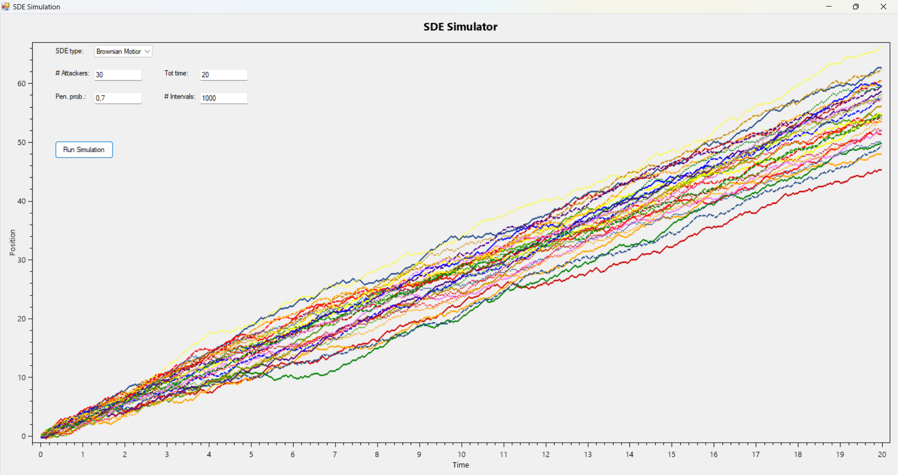

The Cauchy-Schwarz inequality states that for any vectors \( \mathbf{u} \) and \( \mathbf{v} \) in an inner product space, we have:
\[ |\langle \mathbf{u}, \mathbf{v} \rangle| \leq \|\mathbf{u}\| \|\mathbf{v}\|, \]
where \( \langle \mathbf{u}, \mathbf{v} \rangle \) denotes the inner product of \( \mathbf{u} \) and \( \mathbf{v} \), and \( \|\mathbf{u}\| \) and \( \|\mathbf{v}\| \) denote their norms.
Define a parameter \( t \in \mathbb{R} \) and examine the norm squared of \( \mathbf{u} - t \mathbf{v} \):
\[ \|\mathbf{u} - t \mathbf{v}\|^2 \geq 0. \]
This inequality holds because the squared norm of any vector is always non-negative.
We can express the squared norm as:
\[ \|\mathbf{u} - t \mathbf{v}\|^2 = \langle \mathbf{u} - t \mathbf{v}, \mathbf{u} - t \mathbf{v} \rangle. \]
Expanding this using the linearity of the inner product, we obtain:
\[ \|\mathbf{u} - t \mathbf{v}\|^2 = \langle \mathbf{u}, \mathbf{u} \rangle - 2t \langle \mathbf{u}, \mathbf{v} \rangle + t^2 \langle \mathbf{v}, \mathbf{v} \rangle. \]
Simplifying, we find:
\[ \|\mathbf{u} - t \mathbf{v}\|^2 = \|\mathbf{u}\|^2 - 2t \langle \mathbf{u}, \mathbf{v} \rangle + t^2 \|\mathbf{v}\|^2. \]
Since \( \|\mathbf{u} - t \mathbf{v}\|^2 \geq 0 \), we have:
\[ \|\mathbf{u}\|^2 - 2t \langle \mathbf{u}, \mathbf{v} \rangle + t^2 \|\mathbf{v}\|^2 \geq 0. \]
This is a quadratic inequality in \( t \), and it must hold for all \( t \in \mathbb{R} \).
For a quadratic expression \( at^2 + bt + c \geq 0 \) to hold for all \( t \), the discriminant must be non-positive. Here, the discriminant is:
\[ (-2 \langle \mathbf{u}, \mathbf{v} \rangle)^2 - 4 \|\mathbf{v}\|^2 \|\mathbf{u}\|^2 \leq 0. \]
Simplifying, we get:
\[ 4 \langle \mathbf{u}, \mathbf{v} \rangle^2 \leq 4 \|\mathbf{u}\|^2 \|\mathbf{v}\|^2. \]
Dividing by 4, we find:
\[ \langle \mathbf{u}, \mathbf{v} \rangle^2 \leq \|\mathbf{u}\|^2 \|\mathbf{v}\|^2. \]
Taking the square root of both sides (and noting that norms are non-negative), we get:
\[ |\langle \mathbf{u}, \mathbf{v} \rangle| \leq \|\mathbf{u}\| \|\mathbf{v}\|, \]
which is the Cauchy-Schwarz inequality.
In probability and statistics, independence and uncorrelation are concepts used to describe the relationship between two random variables, but they have distinct meanings and implications.
Two random variables \( X \) and \( Y \) are independent if knowing the outcome of one does not provide any information about the other. Mathematically, \( X \) and \( Y \) are independent if their joint probability distribution satisfies:
\[ P(X \leq x, Y \leq y) = P(X \leq x) \cdot P(Y \leq y) \quad \text{for all } x, y. \]
For independent random variables, all moments (expectations of powers of the variables) factorize. This strong relationship implies that not only the means and variances are unaffected by each other, but so are all higher moments.
Measures of Independence: Independence is generally verified through specific criteria, such as examining the joint and marginal distributions of \( X \) and \( Y \). However, in practice, true independence can be difficult to verify unless we know the complete joint distribution of the variables.
Two random variables \( X \) and \( Y \) are uncorrelated if their covariance is zero:
\[ \text{Cov}(X, Y) = \mathbb{E}[(X - \mathbb{E}[X])(Y - \mathbb{E}[Y])] = 0. \]
This condition implies that \( X \) and \( Y \) have no linear relationship, meaning changes in one variable do not produce a consistent, linear change in the other. Uncorrelated variables might still have nonlinear dependencies, so uncorrelation is a weaker condition than independence.
Measures of Uncorrelation: The covariance or, equivalently, the correlation coefficient is typically used to measure uncorrelation. The correlation coefficient \( \rho \) is defined as:
\[ \rho_{X,Y} = \frac{\text{Cov}(X, Y)}{\sqrt{\text{Var}(X) \cdot \text{Var}(Y)}}. \]
If \( \rho_{X,Y} = 0 \), \( X \) and \( Y \) are uncorrelated.
The main distinction between independence and uncorrelation is that independence is a stronger condition than uncorrelation:
For example, if \( X \) is a standard normal variable and \( Y = X^2 \), then \( X \) and \( Y \) are uncorrelated (since their covariance is zero) but not independent, as knowing \( X \) determines \( Y \).
Understanding the difference between independence and uncorrelation is important in statistical modeling and data analysis:
Enhance your existing Euler-Maruyama (E-M) simulator by developing a unified simulation framework. Create a general central class that can possibly manage various types of stochastic differential equations (SDEs).
Most of the code is the same as the previous homeworks, in particular the logic of the various types of simulation. Therefore, the code was modified by creating a general method that in turn calls specific functions to process the data.
The code below shows the new method just described: RunSimulation().
The screenshots below show the output of the realized program. A user interface was added to make it easier to enter data and choose the type of simulation.
{kind=link}
{kind=link}
{kind=link}
{kind=link}